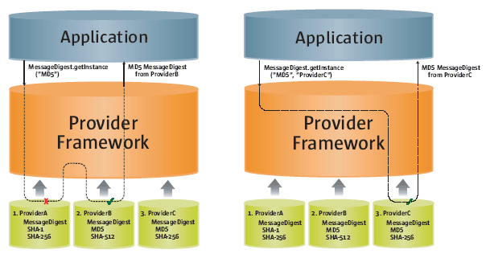
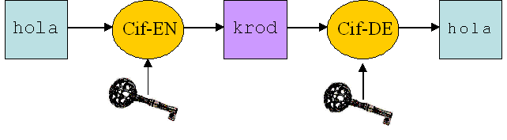
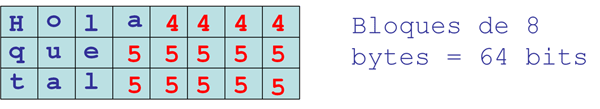
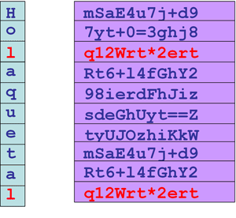
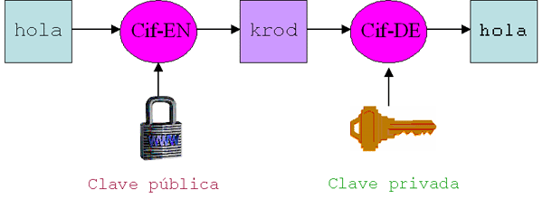
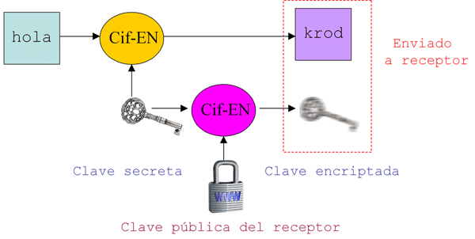
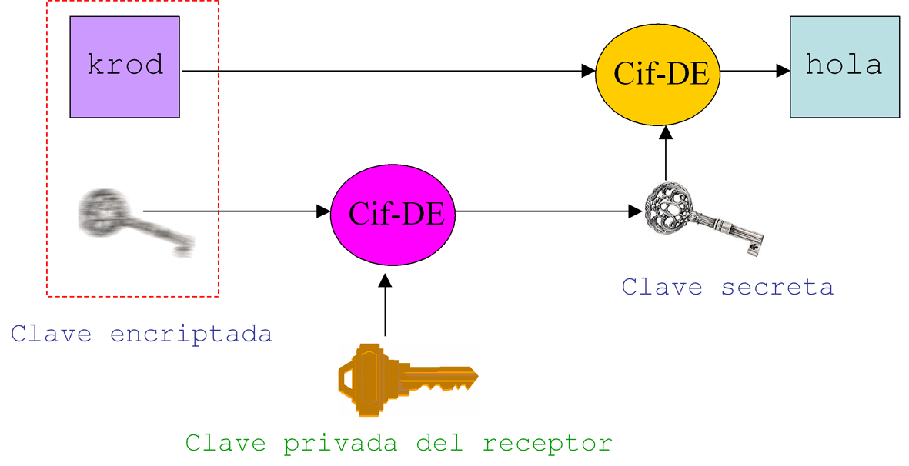
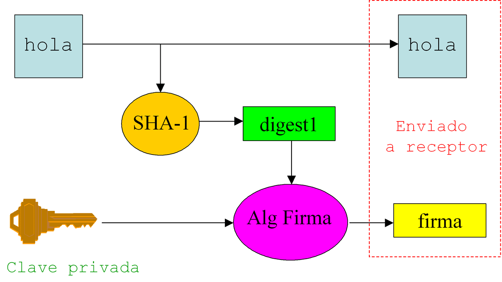
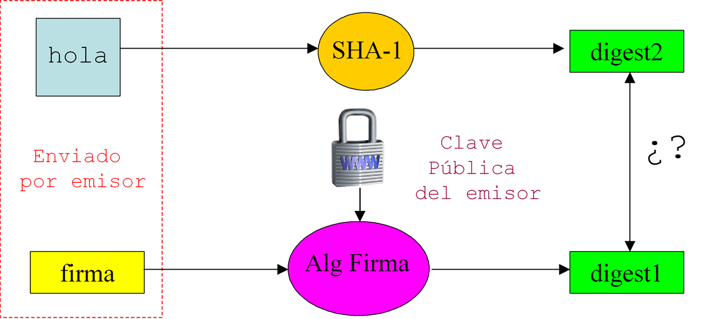
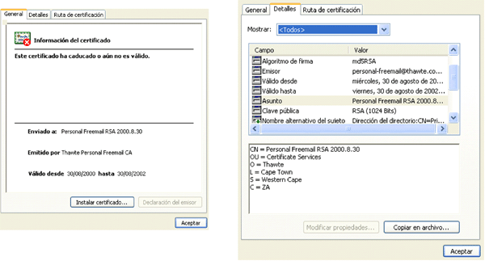

PKI: Infraestructura de Clave Pública
JCA: Java Cryptography Architecture
Este es uno de los dos API que proporcionan facilidades criptográficas en Java (firmas, certificados, etc). Se trata del conjunto de clases que forma el package java.security. Las clases principales son
| Provider | Interfaz al package de la implementación de un determinado proveedor. |
| Security | Manejo de proveedores instalados en la MV y de propiedades de seguridad (permisos). |
| MessageDigest | Manejo de digests con SHA-1 o con MD5. |
| Signature | Manejo de firma digital con DSA o RSA (encriptación) y MD5 (digests). |
| AlgorithmParameter | Manejo de representaciones opacas (sin acceso directo) de los parámetros criptográficos. |
| AlgorithmParameterGenerator | Obtiene un conjunto de parámetros apropiados para un algoritmo. |
| Key | Interfaz para manejo de claves representadas de forma opaca. |
| KeySpec | Manejo de representaciones transparentes de las claves y (en este caso) comunes a todas ellas. |
| KeyFactory | Convierte representaciones de claves opacas (claves) en transparentes (especificaciones). Es bidireccional. |
| CertificateFactory | Genera certificados y listas de revocación siguiendo una deterinada codificación (p.e. X.509). |
| KeyPair | Par (público, privado) para un esquema asimétrico. |
| KeyPairGenerator | Obtiene un par (público, privado). |
| KeyStore | Interfaz para el manejo de almacenes de claves. |
| SecureRandom | Manejo de números aleatorios. |
Por ejemplo, como ya hemos dicho, una de estas facilidades es un message digest o hash, esto es una huella para comprobar, más tarde, que un determinado documento no ha sido alterado. Para crear un digest primero se crea una instancia de un algoritmo de hashing (MD5 o SHA-1), especificando opcionalmente el proveedor de la implementación:
MessageDigest md = MessageDigest.getInstance("MD5", "Sun");
A continuación proporcionamos los datos sobre los que se debe crear el digest, suponiendo que estos se encuentran en un array de datos de tipo byte:
md.update(datos);
Finalmente podemos almacenar el digest propiamente dicho en otro array:
byte[] d = md.digest();
JCE: Java Cryptography Extension
Este segundo API añade facilidades de encriptación y desencriptación de datos a JCA y se corresponde con las clases del package javax.crypto. Las más importantes son:
| Cipher | Cifrador de un determinado algoritmo en modo encriptar/desencriptar. |
| CipherInput{Output}Stream | Facilita el uso de cifradores de stream de salida (entrada). |
| KeyGenerator | Generador de claves secretas para esquemas simétricos. |
| SecretKeyFactory | Convertir claves (opacas) en especificaciones (transparentes) y viceversa. |
| KeyAgreement | Funcionalidad para el protocolo del mismo nombre para intercambiar mensajes de forma segura sin intercambiar una clave secreta. |
| MAC | Manejo de Message Authentication Codes. |
En general, lo primero que hay que hacer es crear un generador de claves, especificando el algoritmo de encriptación (p.e. Blowfish):
KeyGenerator kg = KeyGenerator.getInstance("Blowfish");
A partir de este generador podemos obtener una clave haciendo
Key k = KeyGenerator.generateKey();
Una vez tenemos la clave, la encriptación se hace creando un cifrador (cipher) especificando algoritmo, modo y padding, y después se inicializa dicho cifrador con la clave que acabamos de crear:
Cipher c = Cipher.getInstance("Blowfish/ECB/PKCS5Padding");
c.init(Cipher.ENCRYPT_MODE, k);
Finalmente realizaremos la encriptación propiamente dicha de los datos contenidos en un array de tipo byte y los devolveremos en otro array:
byte[] cf = c.doFinal(datos);
Para poder usar JCE hay que instalar previamente una implementación. Una de las mas completas (en términos de la cantidad de algoritmos que incorpora) es la de BouncyCastle, disponible en http://www.bouncycastle.org (descargar JCE con proveedor y API). Una vez descargado lo más recomendable es instalarlo como una extensión, es decir copiar el fichero JAR correspondiente en el directorio $JAVA_HOME/jre/lib/ext. Una vez colocado el JAR como extensión se ha de modificar el fichero $JAVA_HOME/jre/lib/security/java.security en donde se definen los distintos proveedores criptográficos para añadir el nuevo proveedor:
# Nuevo proveedor de BouncyCastle security.provider.x=org.bouncycastle.jce.provider.BouncyCastleProvider
La máquina virtual incorpora por defecto el SunJCE. Si alguna funcionalidad no se encuentra en un proveedor pasa a otro:

Encriptación Simétrica
Estrategias de clave secreta
La forma más sencilla de realizar encriptación-desencriptación de datos es utilizar la misma clave en ambos procesos. Como acabamos de ver, podemos definir un cifrador para encriptar y luego utilizar el mismo cifrador para desencriptar. La encriptación simétrica es rápida y por ello se recomienda en aquellas aplicaciones en donde se requiere proteger un gran segmento de datos. Sin embargo, al exigir que tanto emisor como receptor se pongan de acuerdo es muy sensible a ataques-a-mitad, por lo que la clave que ha de enviarse suele encriptarse de forma asimétrica como veremos más adelante. En todo caso cuanto mayor sea la longitud de la clave más segura será la encriptación (lo habitual es manejar claves de entre 40 y 128 bits, recomendándose la longitud de 128 bits).

DESede y Blowfish en JCE
Los algoritmos de encriptación simétrica más conocidos son TripleDES y Blowfish. El primero, también llamado DESede, es una versión evolucionada (y más segura) del algoritmo DES que utilizaba claves de solo 56 bits. En DESede producen tres rondas de DES (encriptación, desencriptación y otra vez encriptación) en las que se utilizan 2 o 3 claves distintas de 56 bits, obteniéndose una clave combinada de 112 o de 168 bits. Por otro lado, Blowfish es otro algoritmo que permite claves de longitud mayor (448 bits). El ejemplo de test que vimos al final del capítulo anterior utilizaba Blowfish a la hora de generar la clave y el cifrador. Si queremos modificar dicho ejemplo para utilizar DESede simplemente tendremos que sustituir las líneas que hacen referencia a Blowfish por
...
KeyGenerator generador = KeyGenerator.getInstance("DESede");
...
Cipher cifrador = Cipher.getInstance("DESede/ECB/PKCS5Padding");
La expresión "DESede/ECB/PCKCS5Padding" contiene el nombre del algoritmo, el tipo de padding (según estándard PCKS5) y el modo de encriptación (ECB, CBC, etc).
En cuanto al tipo de padding, hay que tener en cuenta que los llamados cifradores de bloque operan en trozos de 64 bits. Sin embargo el texto plano no es múltiplo de esa cantidad por lo que antes de encriptar hay que añadir complementos para que sea múltiplo. En PKCS#5 se añaden bytes codificando el número de bytes necesarios para completar el bloque

En cuanto al modo de encriptación, en el modo ECB (Electronic Code Book) cada símbolo se cifra siempre igual independientemente del lugar que ocupe en el texto (ver figura adjunta). Esto es típico de los cifradores de bloque. Alternativamente, en CBC (Cipher Block Chaining) el cifrado de un símbolo depende, como veremos de su posición en el texto (típico de los cifradores de stream).

El código completo del ejemplo de encriptación simétrica está en Blowfish.java:
import javax.crypto.*;
import java.security.*;
public class Blowfish {
// Definimos cadena a encriptar
public static final String cadena = "Esto es un test.";
public static void main(String[] args) throws Exception {
System.out.println("El texto original es: " + cadena);
// Generar una clave Blowfish
System.out.println("Intentando coger una clave Blowfish....");
// Forzando el proveedor de BouncyCastle
KeyGenerator generador = KeyGenerator.getInstance("Blowfish");
Provider provider=generador.getProvider();
System.out.println(String.valueOf(provider.getName()));
generador.init(128);
SecretKey clave = generador.generateKey();
System.out.println("OK");
// Intentar encriptar texto
System.out.print("Intentando coger un cifrado y encriptar...");
Cipher cifrador = Cipher.getInstance("Blowfish/ECB/PKCS5Padding");
cifrador.init(Cipher.ENCRYPT_MODE, clave);
byte[] textoCifrado = cifrador.doFinal(cadena.getBytes("UTF8"));
System.out.println("Ok");
System.out.println("El texto cifrado es: " + textoCifrado);
System.out.println("Test completado con exito");
}
}
Cifradores de Stream
Los cifradores que hemos visto hasta ahora son de bloque, es decir que se aplican sobre bloque de datos (usualmente 64 bits o incluso 128 bits) cada vez. Estos cifradores son adecuados para datos concretos como claves o mensajes concretos. Por el contrario, cuando se trata de encriptar flujos constantes de datos es más conveniente utilizar cifradores de stream, que encriptan bit a bit o byte a byte.
Los cifradores de stream suelen funcionar bajo modo CBC. Este modo se diferencia de ECB en que a cada byte no se le asocia necesariamente el mismo código sino que éste código depende de los anteriores y la inicialización es aleatoria realizándose con un IV o Initialization Vector. Dicho vector se obtiene a partir de un byte aleatorio de un determinado tamaño usando la clase java.security.SecureRandom:
byte[] bytesAleatorios = new byte[8]; SecureRandom aleatorio = new SecureRandom(); aleatorio.nextBytes(bytesAleatorios);
A continuación se crea el IV propiamente dicho, usando la clase IVParameterSpec:
IVParameterSpec iv = new IVParameterSpec(aleatorios);
Con el IV ya podemos crear e inicializar un cifrador CBC:
Cipher cifrador = Cipher.getInstance("Blowfish/CBC/PKCS5Padding");
cifrador.init(Cipher.ENCRYPT_MODE, clave, iv);
En cuanto al uso de este tipo de cifradores, el hecho de disponer de las clases CipherInputStream y CipherOutputStream en javax.crypto facilita su aplicación a cualquier tipo de flujo de datos como un fichero. Por ejemplo, podemos encriptar un fichero con el siguiente fragmento de código:
FileInputStream entrada = new FileInputStream("fichero.txt");
FileOutputStream salida = new FileOutputStream("fichero.enc");
...
CipherOutputStream salidaCifrador = new CipherOutputStream(salida, cifrador);
int r = 0;
while (r = entrada.read() != -1) {
salidaCifrador.write(r);
}
salidaCifrador.close();
salida.close();
entrada.close();
Un aspecto importante a tener en cuenta con los IV es que hay que utilizar para desencriptar el mismo IV que se usó para encriptar por lo que será necesario almacenarlo, por ejemplo al principio del fichero encriptado.
Encriptación asimétrica
Clave Pública y Clave Privada
El esquema asimétrico resuelve el problema de necesitar una clave pre-establecida. Se divide la clave en dos partes par de claves): la clave pública y la clave privada. Dichas claves son complementarias: Un mensaje encriptado con la clave pública sólo puede ser desencriptado con la correspondiente clave privada. Por lo tanto, el conocimiento de la clave pública no implica capacidad de desencriptación. Así, una persona podrá difundir su clave pública para que cualquiera pueda enviarle un mensaje cifrado que solamente podrá desencriptarse con la clave privada.

El algoritmo RSA es el más conocido para manejar esquemas asimétricos. Una característica interesante de este método es que las claves son intercambiables a efectos de figurar como públicas o privadas.
En cuanto a la longitud de las claves, esta deberá ser mayor que en el caso simétrco para proporcionar el mismo nivel de seguridad: una clave asimétrica de 1024 bits proporciona la misma seguridad que una simétrica de 128 bits. Esto hace el esquema asimétrico 1000 veces más lento que su homólogo simétrico.
Clases e Interfaces en Java
Para aplicar encriptación asimétrica usaremos básicamente las siguientes clases de java.security:
| KeyPair | Encapsula un par de claves. getPublic() devuelve la clave pública y getPrivate() la privada |
| PublicKey | Interface para claves públicas. En el package java.security.interfaces está la sub-interface RSAPublicKey que define las claves para el algoritmo RSA y permite acceder a información de las claves RSA. |
| PrivateKey | Similar a la anterior, para la clave privada. Hay que considerar las sub-interfaces RSAPrivateKey y RSAPrivateCrtKey que contienen métodos extra para coger parámetros de estas claves. |
| KeyPairGenerator | Las claves pública y privada siempre se generan juntas con el método genKeyPair(). |
Encriptación de Clave-de-Sesión
La encriptación asimétrica, lenta por naturaleza, es especialmente útil para encriptar claves simétricas. En el modelo de clave-de-sesión (session-key) un mensaje se encripta con una clave secreta y ésta a su vez es encriptada con la clave con la clave pública del receptor del mensaje. Cuando éste lo recibe solo tiene que utilizar su clave privada para desencriptar la clave secreta y ésta a su vez para desencriptar el mensaje.

Veamos como realizar este tipo de estrategia en el ejemplo RSA.java. En primer lugar creamos una clave simétrica, tipo Blowfish de 128 bits, para cifrar el texto.
System.out.println("Generando clave Blowfish...");
KeyGenerator generador = KeyGenerator.getInstance("Blowfish");
generador.init(128);
Key claveBlowfish = generador.generateKey();
System.out.println("Formato: "+claveBlowfish.getFormat());
A continuación generamos el par de claves RSA (publica y privada).
System.out.println("Generando par de claves RSA...");
KeyPairGenerator generadorRSA = KeyPairGenerator.getInstance("RSA");
generadorRSA.initialize(1024);
KeyPair claves = generadorRSA.genKeyPair();
System.out.println("Generada la clave asimétrica.");
Ya podemos crear e inicializar el cifrador RSA que se va a encargar de encriptar la clave Blowfish con la parte pública del par RSA.
Cipher cifradorRSA= Cipher.getInstance("RSA/ECB/PKCS1Padding");
cifradorRSA.init(Cipher.ENCRYPT_MODE, claves.getPublic());
Una vez tenemos este cifrador cogemos los byte de la clave Blowfish y los encriptamos
byte[] bytesClaveBlowfish = claveBlowfish.getEncoded(); byte[] claveBlowfishCifrada = cifradorRSA.doFinal(bytesClaveBlowfish);
Desencriptamos la clave Blowfish con la parte privada del par RSA.
cifradorRSA.init(Cipher.DECRYPT_MODE, claves.getPrivate()); byte[] bytesClaveBlowfish2 = cifradorRSA.doFinal(claveBlowfishCifrada);
Finalmente recreamos la clave Blowfish.
SecretKey nuevaClaveBlowfish = new SecretKeySpec(bytesClaveBlowfish2, "Blowfish");

Autentificación. Firma y Certificado Digital
Autentificación por Firma Digital
Una firma digital asocia un individuo con unos datos. Por ejemplo para garantizar que yo he escrito un determinado e-mail éste se firma digitalmente. Una firma digital se implementa como un digest (asociado al mensaje que se desea firmar) procesado por una clave privada (asociada al usuario que firma).
Cuando el destinatario recibe el mensaje y su firma digital asociada se procede en tres pasos. (1)Obtener el digest del mensaje. (2) Usar la clave pública del remitente para extraer el digest de la firma digital. (3) Si ambos digests son iguales entonces validar.


En JCA, el proceso de crear el digest, firmar, extraer el digest y verificar la firma se lleva a cabo por clases del package java.security.Signature:
| getInstance() | Obtiene una instancia de un objeto Signature especificando algoritmo y opcionalmente el proveedor. P.e. MD5WithRSA,SHA1WithRSA, MD5WithDSA,SHA1WithDSA |
| initSign() | Inicializa un objeto Signature con una clave privada para firmarlo. |
| initVerify() | Inicializa un objeto Signature con una clave pública para verificarlo. |
| update() | Una vez que el objeto signature está inicializado se le pasan los datos que se quieren firmar o verificar como array de bytes. |
| sign() | Devuelve los bytes de la firma digital para los datos pasados a través de update(). |
| verify() | Tomando como argumento los bytes de una firma digital, devuelve un valor booleano indicando si la firma asociada a los datos pasados a update() es correcta. |
Por ejemplo, si hemos generado un par de claves RSA y lo hemos guardado en la variable parClaves y tenemos un array de bytes llamado datos que contiene el texto a firmar, seguiríamos el siguiente proceso para firmarlo:
// Obtener instancia del objeto Signature e inicializarlo con
// la clave privada para firmarlo
Signature firma = Signature.getInstance("MD5WithRSA");
firma.initSign(parClaves.getPrivate());
// Prepara la firma de los datos
firma.update(datos);
// Firmar los datos
byte[] bytesFirma = firma.sign();
// Mostrar en ASCII
System.out.println("\nFirma:\n" + new BASE64Encoder().encode(bytesFirma));
Si posteriormente queremos realizar la verificación deberemos inicializar el objeto Signature para verificación y recoger un valor booleano o bien una SignatureException cuando la verificación no tenga éxito:
firma.initVerify(parClaves.getPublic());
// Pasar los datos que fueron firmados
firma.update(datos);
// Verificar
boolean verificado = false;
try {
verificado = firma.verify(bytesFirma);
} catch (SignatureException se) {
verificado = false;
}
if (verificado) {
System.out.println("\nFirma verificada.");
} else {
System.out.println("\nFirma incorrecta.");
}
El ejemplo completo se encuentra en FirmaDigital.java.
Certificados Digitales: Contenidos
Uno de los problemas de las firmas digitales es que en el momento de la validación no se tiene garantía de que la clave pública que se utiliza sea la correcta. Los certificados digitales intentan añadir identidad a una clave pública para garantizar que el dueño de dicha clave es quien dice ser. En definitiva, un certificado digital consiste en la clave pública más información firmada por la clave privada de una tercera parte denominada autoridad certificadora (certificate authority o CA) como Verisign o Thawte.
Para codificar certificados en JDK se utiliza el estándar X.509. Hay tres versiones (v1, v2, v3) cada una de las cuales añade ciertas características sobre la anterior. Por ejemplo un certificado X.509v1 contiene la siguiente información:
| Version | Campo que indica la versión del certificado: V1, V2 o V3. |
| Serial Number | Entero largo que es único para la CA que emite el certificado. |
| Signature Algorithm | Algoritmo que la CA utilizó para firmar el certificado. |
| Validity | Intervalo de validez entre las fechas from... y to.... |
| Subject | Indica, en formato X.500 a quién se el emite el certificado. |
| Key | Clave pública del sujeto del certificado. |
| Signature | Firma de la CA que habrá de ser verificada contra la clave pública de la CA. |

Generando Certificados: keystores y keytool
En Java un keystore o almacén de claves es una colección de certificados y claves. El kestore por defecto se encuentra en el fichero $HOME/.keystore y contiene dos tipos de entradas: certificados y claves. Los certificados son en efecto certificados activos válidos. Las claves son privadas o bien simétricas y deben estar asociadas a certificados que contienen los sujetos que poseen dichas claves. No obstante, por razones de seguridad no es recomendable almacenar claves simétricas en el almacén. En cualquier caso el almacén usa passwords para proteger el acceso a las claves privadas.
La herramienta que maneja almacenes de claves y permite crear certificados es la aplicación keytool. Algunas de las opciones de esta aplicación son:
| -certreq | Crea una petición de certificado por ejemplo para obtener un certificado de una CA, como Verisign, que esté contemplada en esta aplicación. |
| -delete | Borra una entrada del keystore. |
| -genkey | Genera un par de claves para un certificado auto-firmado. Se puede especificar el algoritmo con -keyalg. Por ejemplo -keyalg RSA |
| -keyclone | Copia una entrada en el almacén. |
| -keystore | Especifica un fichero como almacén. |
| -printcert | Muestra un certificado digital. |
| -selfcert | Genera un certificado digital auto-firmado. |
| -storepasswd | Cambia el password del almacén. |
| -export | Exporta un certificado de un almacén codifidado en DER. Si queremos codificación BASE64 hay que añadir la opción -rfc. |
Por ejemplo, con keytool -v -list listaremos las entradas del fichero .keystore. Si queremos añadir una entrada, identificada por un alias, haremos lo siguiente: keytool -genkey -alias test donde test es el alias. La aplicación nos irá pidiendo los datos para el certificado. Si estamos en windows y no tenemos creado el .keystore en p.e. C:\Documents and Setting/sco hay que hacer lo siguiente:
keytool -genkey -alias test -kesytore .keystore
keytool -export -alias test -file micertificado.cer
El contenido del certificado será algo parecido a micertificado.cer una vez exportado a la codificación DER.
Certificados en Java
Las clases para el manejo de certificados en Java pertenencen al paquete java.security.cert:
| CertificateFactory | Se utiliza para generar instancias de objetos CertificateFactory a través de getInstance(). |
| Certificate | Clase abstracta que encapsula un certificado. Los métodos más importantes de esta clase son: getPublicKey() (que devuelve la clave pública del sujeto del certificado) y verify() (que tomando como argumento la clave pública de la CA verifica la firma del certificado). |
| X509Certificate | Otra clase que proporciona métodos para manejar certificados X.509. |
Por ejemplo podemos leer un certificado *.cer de un fichero e imprimirlo con las siguientes instrucciones: (el código completo se encuentra en ImprimirCert.java)
CertificateFactory factoria = CertificateFactory.getInstance("X.509");
// Abrir el fichero
FileInputStream fis = new FileInputStream (args[0]);
// Generar certificado para el fichero
Certificate cert = factoria.generateCertificate(fis);
fis.close();
// Imprimir información
System.out.println(cert);
Si por el contrario queremos leer el certificado directamente del keystore debemos utilizar la clase java.security.KeyStore. El método load() de esta clase permite cargar el almacén si le pasamos el nombre del fichero de almacén (p.e. .keystore) y el password correcto. A continuación el método getCertificate() permite obtener el certificado con un alias concreto (el código completo se encuentra en ImprimirCertKS.java):
// Abrir el keystore
FileInputStream fIn = new FileInputStream(fich_keystore);
KeyStore keystore = KeyStore.getInstance("JKS");
// Cargar el keystore
keystore.load(fIn, password);
// Obtener el certificado
Certificate cert = keystore.getCertificate(alias);
// Mostrar el certificado
System.out.println(cert);
Listas de Revocación de Certificados (CRLs)
Como hemos visto, un certificado está firmado con la clave privada de una autoridad certificadora (CA). Un elemento clave en la gestión de certificados es tener la posibilidad de que una CA decida en un momento dado que uno de los certificados que emitió ya no es válido antes de que expire. P.e. es posible que la clave privada haya sido comprometida o bien simplemente que el certificado corresponda a un empleado que ha dejado la empresa.
Un mecanismo declarativo para inutilizar certificados es que la CA haga pública una lista negra, denominada lista de revocación o CRL (Certificate Revocation List) y que desde la máquina virtual asociada a nuestra empresa la descarguemos y comprobemos si los certificados de nuestro almacén de claves han sido revocados o no. Por ejemplo, desde http://crl.verisign.com podemos descargar una serie de ficheros *.crl conteniendo distintas listas de revocación para distintas empresas y diversos niveles de certificación (ver p.e. el fichero BTClass1Individual.crl).
Pues bien, una CRL no es más que una estructura de datos que consta de una cabecera (en la que consignamos datos de la CA además de la fecha en la que se publica y cúando se publicará una actualización) y un cuerpo (con tantas entradas como certificados revocados y para cada una de ellas consta el número de serie del certificado y su fecha de revocación).
En java, la clase que implementa las CRLs es java.security.cert.X509CRL mientras que la que implementa las entradas contenidas en el cuerpo de las mismas es java.security.cert.X509CRLEntry. Por ejemplo, en VerCRL.java tenemos un programa ejemplo que imprime las CRLs que se le pasan como argumento:
import java.io.FileInputStream;
import java.util.Set;
import java.util.Iterator;
import java.security.cert.CertificateFactory;
import java.security.cert.X509CRL;
import java.security.cert.X509CRLEntry;
public
class VerCRL
{
public
static
void
main(String [] arstring)
{
try
{
// Coger la CertificateFactory
CertificateFactory certificatefactory =
CertificateFactory.getInstance("X.509");
// Cada fichero de la linea de comandos debe tener una única CRL codificada en DER
for (int i = 0; i < arstring.length; i++)
{
// Abrir fichero.
FileInputStream fileinputstream = new FileInputStream(arstring[i]);
// Generar una X509CRL desde el fichero.
X509CRL x509crl =
(X509CRL)certificatefactory.generateCRL(fileinputstream);
// Imprimir info sobre la crl.
System.out.println("---CRL---");
System.out.println("tipo = " +
x509crl.getType());
System.out.println("version = " +
x509crl.getVersion());
System.out.println("emisor = " +
x509crl.getIssuerDN().getName());
System.out.println("algoritmo de firma = " +
x509crl.getSigAlgName());
System.out.println("OID firmante = " +
x509crl.getSigAlgOID());
System.out.println("esta actualizacion = " +
x509crl.getThisUpdate());
System.out.println("proxima actualizacion = " +
x509crl.getNextUpdate());
System.out.println();
// Ahora imprimimos la info de las entradas (certificados revocados)
System.out.println("---Entradas---");
Set setEntries = x509crl.getRevokedCertificates();
if (setEntries != null && setEntries.isEmpty() == false)
{
for (Iterator iterator = setEntries.iterator();
iterator.hasNext(); )
{
X509CRLEntry x509crlentry = (X509CRLEntry)iterator.next();
System.out.println("numero de serie = " +
x509crlentry.getSerialNumber());
System.out.println("fecha de revocacion = " +
x509crlentry.getRevocationDate());
System.out.println("extensiones = " +
x509crlentry.hasExtensions());
System.out.println();
}
}
// Hemos acabado.
System.out.println("---");
// Cerrar fichero.
fileinputstream.close();
}
}
catch (Exception exception)
{
exception.printStackTrace();
}
}
}
Si ahora queremos comprobar que un determinado certificado ha sido revocado o no con respecto a una lista, haremos uso del método java.security.cert.X509CRL.isRevoked(). En el Revocado.java podemos ver lo siguiente:
// Generar objeto X09CRL
X509CRL crl = (X509CRL) factoria.generateCRL(fis2);
fis2.close();
// Testar si el certificado ha sido revocado
if (crl.isRevoked(cert)) {
System.out.println("Certificado ha sido revocado");
} else {
System.out.println("Certificado está OK");
}
PKI: Creando nuestra propia CA
Una infraestructura de clave pública (Public Key Infraestructure - PKI) consiste en un conjunto de software capaz de proporcionar los siguientes servicios: creación de certificados, revocación de certificados, validación de certificados y proporcionar certificados a clientes. Si queremos implementar una PKI propia usando Java tenemos que ser capaces de implementar los elementos antes descritos. Idealmente, usaremos Java para crear una CA interna a nuestra empresa. Desde esta CA podremos proporcionar los servicios necesarios. A continuación veremos 2 de esos servicios: firmar nuestros propios certificados y crear listas de revocación. Para implementarlos nos basaremos en el paquete sun.security.x509 que aunque no es totalmente Java nos ahorra el tremendo trabajo de implementar estos servicios desde cero.
Firmar Certificados con sun.security.x509
Supongamos que pretendemos constituirnos en CA para nuestra propia organización. Esto nos permite emitir nuestros propios certificados. Así, p.e., podremos emitir certificados de e-mail para que todos los miembros de nuestra organización puedan firmar sus correos electrónicos o bien crear certificados para validar el acceso de los clientes a nuestras bases de datos, etc.
Para ello podemos utilizar las clases del paquete sun.security.x509. Entre las más importantes tenemos las siguientes:
| X509CertImpl | Proporciona la implementación del certificado X.509. Usaremos esta clase para crear un nuevo certificado y lo firmaremos con el método sign(). |
| X509CertInfo | Encapsula los atributos del certificado X.509 y nos permite instanciar dichos atributos en el momento de crearlo. |
| X500Name | Nombre X500 (CN=Common name, OU=Organizational Unit, O=Organization, L=Location, ST=State, C=Country) del sujeto. |
| AlgorithmId | Identificación del algoritmo criptográfico. |
| CertificateSubjectName | Nombre del sujeto del certificado. |
| CertificateValidity | Período de validez del certificado. |
| CertificateSerialNumber | Número de serie del certificado. Único para una CA dada. |
| CertificateIssuerName | Nombre x.500 del emisor del certificado (cuando es auto-firmado coincide con el sujeto). |
| CertificateAlgorithmID | Identificador del algoritmo usado para firmar el certificado. |
Lo primero es crear un certificado y una clave privada para la CA. Para ello haremos lo siguiente:
keytool -genkey -v -alias CA -keyalg RSA -keystore almacen
A continuación nos pediran información X.500 sobre la CA y nos preguntarán la clave de la CA. Tenemos pués el certificado y la clave de la CA.
El siguiente paso consiste en crear un certificado que queramos firmar con el certificado de la CA (encadenamiento de certificados):
keytool -genkey -v -alias miClave -keyalg RSA -keystore almacen
Y de nuevo contestaremos a las preguntas rellenando los atributos que deseemos. No obstante el certificado que obtenemos es auto-firmado. Lo interesante es reemplazarlo por uno firmado por la CA. Para ello usaremos el certificado y la clave privada de la CA. Una vez leido el almacén (ver el código completo en FirmarCertificado.java) seguiremos los pasos que se detallan a continuación:
1. Leer la clave privada y el certificado de la CA
PrivateKey clavePrivadaCA = (PrivateKey)keystore.getKey(aliasCA, passwordCA); java.security.cert.Certificate certificadoCA = keystore.getCertificate(aliasCA);
2. Crear una implementación X.509 para el certificado del CA
byte[] codificado = certificadoCA.getEncoded(); X509CertImpl implementacionCA = new X509CertImpl(codificado); X509CertInfo infoCA = (X509CertInfo)implementacionCA.get (X509CertImpl.NAME + "." + X509CertImpl.INFO); X500Name emisorCA = (X500Name)infoCA.get (X509CertInfo.SUBJECT + "." + CertificateIssuerName.DN_NAME);
3. Leer la clave privada y el certificado a firmar.
java.security.cert.Certificate cert = keystore.getCertificate(aliasCert); PrivateKey clavePrivada = (PrivateKey)keystore.getKey(aliasCert, passwordCert);
4. Crear de nuevo otra implementación X.509 para el certificado a firmar.
codificado = cert.getEncoded(); X509CertImpl implementacionCert = new X509CertImpl(codificado); X509CertInfo infoCert = (X509CertInfo)implementacionCert.get (X509CertImpl.NAME + "." + X509CertImpl.INFO);
5.Especificar y almacenar el período de validez.
Date inicio = new Date(); Date fin = new Date(inicio.getTime() + VALIDEZ*24*60*60*1000L); CertificateValidity intervalo = new CertificateValidity(inicio, fin);
6. Crear y almacenar un número de serie.
infoCert.set(X509CertInfo.SERIAL_NUMBER, new CertificateSerialNumber((int)(inicio.getTime()/1000)));
7. Poner como emisor a la CA.
infoCert.set(X509CertInfo.ISSUER + "." + CertificateSubjectName.DN_NAME, emisorCA);
8. Fijar el algoritmo.
AlgorithmId algoritmo = new AlgorithmId(AlgorithmId.md5WithRSAEncryption_oid); infoCert.set(CertificateAlgorithmId.NAME + "." + CertificateAlgorithmId.ALGORITHM, algoritmo);
9. Crear el nuevo certificado a partir del info.
X509CertImpl nuevoCert = new X509CertImpl(infoCert);
10. Firmar el nuevo certificado que acabamos de crear.
nuevoCert.sign(clavePrivadaCA, ALG);
11. Almacenar en el keystore.
keystore.setKeyEntry(aliasNuevo, clavePrivada, passwordCert,
new java.security.cert.Certificate[] { nuevoCert } );
12. Almacenar el keystore en el fichero.
FileOutputStream output = new FileOutputStream(fich_keystore); keystore.store(output, password); output.close();
Para aplicar esta firma ejecutamos el siguiente comando:
java FirmarCertificado almacen CA miClave miClave2
Así, habremos añadido un nuevo certificado, llamado miClave2, al almacén. Este certificado está emitido por nuestra CA (ver el emisor o issuer).Para verlo haremos lo siguiente:
keytool -list -v -keystore almacen
Finalmente, podemos exportar este certificado codificado en DER o en BASE-64 para usarlo. Sin embargo, en la práctica no se aceptará por defecto, a no ser que importemos el certificado de la CA y lo instalemos en un navegador. Para exportar el certificado de la CA a un fichero de modo que podamos cargarlo en un navegador haremos lo siguiente:
keytool -export -alias CA -keystore almacen -file CA.crt
Crear CRLs con sun.security.x509
Las dos clases centrales en la construcción de CRLs en este paquete son X509CRLImpl y X509CRLEntryImpl que son las implementaciones de las clases X509CRL y X509CRLEntry del paquete java.security.cert.
Veamos cómo leer un certificado del keystore para revocarlo, esto es, para construir una CRL en la que lo insertemos. Este es el motivo del ejemplo RevocarCertificado.java cuyo código se muestra a continuación:
import java.math.*;
import java.io.*;
import java.security.*;
import java.security.cert.*;
import java.util.*;
import sun.security.util.AuthResources;
import sun.security.x509.*;
public class RevocarCertificado {
private static final int VALIDEZ = 365;
public static void main(String[] args) throws Exception {
if (args.length != 3) {
System.err
.println("Uso: java RevocarCertificado keystore alias CRL");
System.exit(1);
}
String fich_keystore = args[0];
String aliasCert = args[1];
String fich_CRL = args[2];
// Obtener password
BufferedReader in = new BufferedReader(new InputStreamReader(System.in));
System.out.print("Password del keystore: ");
char[] password = in.readLine().toCharArray();
// Leer el keystore
FileInputStream input = new FileInputStream(fich_keystore);
KeyStore keystore = KeyStore.getInstance("JKS");
keystore.load(input, password);
input.close();
// 1. Leer el certificado a revocar
java.security.cert.Certificate certificado = keystore
.getCertificate(aliasCert);
// 2. Crear una implementación X.509 para el certificado
byte[] codificado = certificado.getEncoded();
X509CertImpl implementacion = new X509CertImpl(codificado);
X509CertInfo info = (X509CertInfo) implementacion.get(X509CertImpl.NAME
+ "." + X509CertImpl.INFO);
X500Name emisor = (X500Name) info.get(X509CertInfo.SUBJECT + "."
+ CertificateIssuerName.DN_NAME);
// 3. Construir una implementación para la entrada X509CRLEntry
// en donde alojar el certificado.
BigInteger num = (BigInteger) implementacion.getSerialNumber();
System.out.println("Número de serie " + num.toString());
Date hoy = new Date();
X509CRLEntryImpl entrada = new X509CRLEntryImpl(num, hoy);
X509CRLEntryImpl[] entradas = new X509CRLEntryImpl[1];
entradas[0] = entrada;
System.out.println(entradas[0].toString());
if (entradas == null)
System.out.println("entradas es null");
System.out.println(emisor.toString());
System.out.println(hoy.toString());
// 4. Construir una implementacion para el X509CRL
// en donde alojar la X509CRLEntry
Date siguiente = new Date(hoy.getTime() + VALIDEZ * 24 * 60 * 60
* 1000L);
System.out.println(siguiente.toString());
// X509CRLImpl lista = null;
// try {
X509CRLImpl lista = (X509CRLImpl) new X509CRLImpl((X500Name) emisor,
(Date) hoy, (Date) siguiente, (X509CRLEntryImpl[]) entradas);
// } catch (CRLException crle) { System.out.println("Excepcion " +
// crle);}
// Campos del X509CRLImpl
System.out.println("Next update:" + lista.getNextUpdate());
System.out.println("Certificados revocados"
+ lista.getRevokedCertificates());
// 5. Firmar la CRL
KeyPairGenerator generador = KeyPairGenerator.getInstance("RSA");
generador.initialize(1024);
KeyPair par = generador.genKeyPair();
PrivateKey clave = par.getPrivate();
lista.sign(clave, "SHA1withRSA", null);
// 6. Codificar la CRL para guardarlo en fichero
byte[] listabyte = lista.getEncoded();
// 7. Almacenar la X509CRL en un fichero de salida
FileOutputStream salida = new FileOutputStream(fich_CRL);
salida.write(listabyte);
salida.close();
}
}
Sucintamente, tras leer el password y acceder al keystore tienen lugar los siguientes pasos:
1. Obtener el certificado a revocar a partir de su alias en el keystore.
2. Crear una implementación X509 para dicho certificado. Dicha implementación la necesitamos para acceder al campo X500Name asociado al emisor (la CA), así como al número de serie del certificado.
3. Con el campo X500 y el número de serie ya podemos invocar a un constructor de entradas a la CRL, un constructor de X509CRLEntryImpl. El resultado del constructor lo pondremos en un array ya que potencialmente puede haber más de un certificado a revocar en una CRL.
4. Una vez que tenemos el array de X509CRLEntryImpl, aunque con una única entrada ya tenemos el cuerpo de la CRL. Pero ahora necesitamos recopilar datos de la CA necesarios para la cabecera: concretamente las fechas de revocación. Con esos datos ya podemos construir una CRL (objeto X509CRLImpl) y consultar algunos de sus campos.
5. No obstante, antes de poder guardar la CRL en fichero hay que firmar la CRL con una clave privada. Potencialmente se usaría la clave privada de la CA dueña de la lista. Esto permitirá verificar posibles alteraciones cuando se verifique esa lista con la clave pública (lo veremos en un ejercicio).
6. Codificaremos en bytes la CRL antes de guardarla en un fichero.